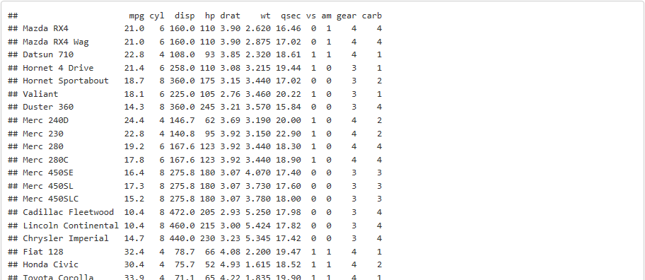
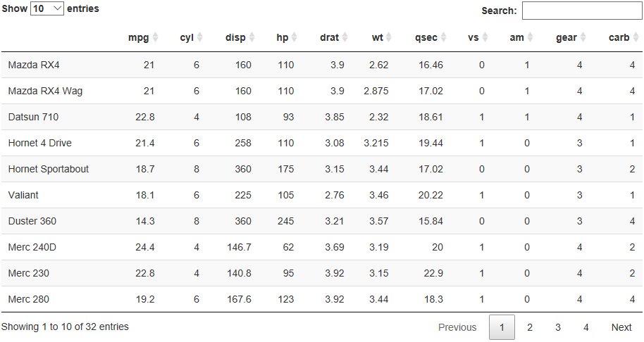

data.frameの表形式表示
Abstract
本ページでは分析レポートで必須とも言えるデータ（dara.frame形式）のテーブル表示について整理しています。
はじめに
R Markdown では(Pandoc) Markdownによるテキストを用いた表の作成が可能すが、chunkからの出力を表形式にすることも可能です。本ページでは分析レポートで比較的利用することが多いテーブル（表）の作成方法を説明します。
HTML系フォーマット
標準機能
R Markdown のHTML系フォーマットにはdf_printといオプションがあります。df_printオプションは“Data Frame Print”の略であり文字通りdara.frame型のデータを表示する方法を指定するためのオプションです。
---
output:
html_document:
df_print: default
---指定できる値は四種類あり、表と呼べるのは実質二種類と言っても差し支えないと思います。残る二つはいわゆるテキスト表形式です。
| 値 | 出力形式 |
|---|---|
| default | Rでdata.frameを表示した時に使われるテキスト表形式 |
| kable | シンプルな表形式 |
| paged | ページ区切りのついたインタラクティブな表形式 |
| tibble | tibbleクラスを用いた簡易なテキスト表形式 |
default
df_printにdefaultを指定した場合は、 R のコンソールでdata.frameを表示させた場合と同じテキスト表形式で表示されます。注意すべき点は表示対象となるデータが大きい（多数の列がある）場合でも全てのデータを表示しますので、ドキュメントの体裁に合わせてhead関数やtail関数などで適宜、表示行数を調整してください。

kable
df_printにkableを指定した場合は、knitr::kabele関数を用いたシンプルな表形式で表示されます。注意すべき点はdefaultを指定した場合と同じく表示対象となるデータが大きい（多数の列がある）場合でも全てのデータを表示しますので、ドキュメントの体裁に合わせてhead関数やtail関数などで適宜、表示行数を調整してください。

paged
df_printにpagedを指定した場合は、defaultやkableと異なり10行単位でページ区切りされた表形式で表示されます。ページ遷移のリンクボタンが自動的に生成され、各列に変数型が表示され、列数が多いと自動的にスクロール表示になります。注意すべき点はプレゼンテーション系のフォーマットとは相性が悪いこともある点です。
tibble
df_printにtibbleを指定した場合は R のコンソールでtibbleクラスのオブジェクトを表示させた場合と同じテキスト表形式で表示されます。注意すべき点は表示対象となるデータが大きい（多数の列がある）場合でも自動的に10行に省略されて表示しますので、全てのデータを見たい場合はpagedや追加パッケージによる表示を行って下さい。

追加パッケージ
表を作成するために様々なパッケージがリリースされています。これらのパッケージを用いることで標準では表現できない表や様々な機能を持った表をつくることができるようになります。
Package DT
DTパッケージはRStudio 社製のインタラクティブな表を作成するためのパッケージです。df_printのpagedオプションのようにページ単位で表示するだけでなく、データのソートや検索といったことも可能です。使い方の詳細については DT: An R interface to the DataTables library でご確認ください。

Package formattable
formattableパッケージは Rプログラミング本格入門 の著者であるKun Renが開発しているパッケージで表現力のある表を作成できます。df_printのkableオプションで出力される表をベースに装飾されますので、データ数が多い場合は注意してください。様々な装飾ができる反面、記述するコードが他の表に比べて複雑です。詳細は 作者のGitHub でご確認ください。 ホクソエムメンバーによる日本語版 もあります。

プレゼンテーション系フォーマット
プレゼンテーション系フォーマットではフォーマットによりテーブルとの相性があるものがあります。代表的なフォーマットでどのように表示されるかのサンプルを作成しましたので参考にしてください。
Google ioslieds
ioslidesフォーマットは各種テーブルとの相性はまずまずですが、表によっては表示できる行数が少なくなるものがあります。見栄えを優先するならdf_printオプションでknitrを指定し、多くのデータを見せたいときは行数少な目にしたDT::datatableを使うことをおすゝめします。なお、widescreenオプションはtrueに設定してください。

W3C slidy
slidyフォーマットは各種テーブルとの相性はまずますですが、テキスト表形式は左詰めになるようです。また、縦方向のスクロールが出来ますので列数がさほど多くなければdf_printオプションでpagedを指定することをおすゝめします。
HTML presentation with reveal.js
revealjsフォーマットは各種テーブルとの相性があまりよくありません。また、表示できる行数が他のフォーマットに比べ少ないのでdf_printオプションでknitrを指定し、表示する内容はhead関数などで抑制することをおすゝめします。